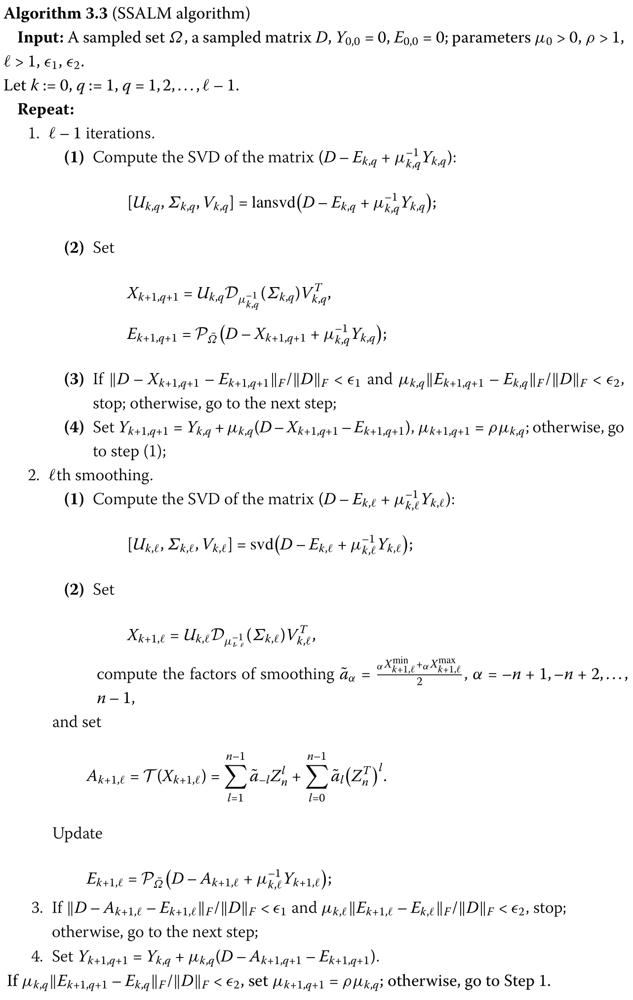

写在前面
最近迷上了Toeplitz矩阵，对低秩表示也有一些基础，也找了结构化低秩表示的论文，不过这些都是基于高斯噪声的，没有用到鲁棒主成分分析的理论和算法，因此找了一系列关于Toeplitz矩阵的低秩恢复和补全的文献,,,,,,。
前置知识
奇异值阈值算子
矩阵X∈Rm×n的秩rank(X)=r，则奇异值分解
X=UΣrVT
其中奇异矩阵对U∈Rm×r,V∈Rr×n为正交阵，奇异值矩阵Σr=diag(σ1,…,σr)为对角矩阵，其对角线元素σ1≥σ2≥⋯≥σr>0。
设阈值参数τ>0，软阈值算子定义为
Sτ(x)=sgn(x)⋅max(∣x∣−τ,0)=⎩⎪⎪⎨⎪⎪⎧x−τ,x+τ,0,x>τx<−τ∣x∣<τ
则软阈值算子可表示为如下凸优化问题的显式解
Sτ(X)=argXminτ∥X∥1+21∥X−Y∥F2
设阈值参数τ>0，奇异值阈值算子定义如下：
Dτ(X)=USτ(Σr)VT
则奇异值阈值算子可表示为如下凸优化问题的显式解
Dτ(X)=argXminτ∥X∥∗+21∥X−Y∥F2
低秩矩阵恢复
低秩矩阵的研究由来已久了，早期的主成分分析的成功和仅十年的压缩感知的发展奠定了低秩表示的理论体系。
低秩矩阵恢复
A,Emin∥A∥∗+λ∥E∥1s.t.M=A+E
该模型是主成分分析的鲁棒推广版本，从高斯噪声推广至稀疏噪声情况。
低秩矩阵补齐
Amin∥A∥∗s.t.PΩ(M)=PΩ(A)
该模型是利用观测元素来恢复未观察到的元素，未观察到的元素可视为稀疏的噪声，只不过用0来代替，与低秩矩阵恢复有异曲同工之处。
常见优化算法
下面针对补齐问题给出常见的算法。
- 奇异值阈值算法(Singular Value Thresholding, SVT)
奇异值阈值算子可以直接求解如下凸优化问题
Aminτ∥A∥∗+21∥A∥F2s.t.PΩ(M)=PΩ(A)
当τ→∞时，该问题的解收敛于低秩矩阵问题的解。求解步骤如下：
- 加速近端梯度算法(Accelerated Proximal Gradient, APG)
低秩矩阵问题可化为如下无约束的凸优化问题
Aminμ∥A∥∗+21∥PΩ(M−A)∥F2
该目标函数可分为两个函数之和
f(A)=μ∥A∥∗,g(A)=21∥PΩ(M−A)∥F2
其中f与g都是凸的，且f是Lipschitz连续且可局部近似为二次函数，则可通过下面二次近似的方式迭代更新变量
Ak+1=argAminf(Yk)+⟨∇f(Yk),A−Yk⟩+2Lf∥A−Yk∥F2+g(A)
迭代的收敛性强烈依赖点Yk的选取，因此使用Nesterov的设置可达到二次收敛速度O(k−2)。该算法步骤如下：
- 增广的拉格朗日乘子法(Augmented Lagrange Multiplier, ALM)
低秩矩阵问题可重新表示为低秩恢复问题
Amin∥A∥∗s.t.D=A+E,PΩ(E)=0
对应的局部(partial)增广拉格朗日函数为
L(A,E,Y,μ)=∥A∥∗+⟨Y,D−A−E⟩+2μ∥D−A−E∥F2
该算法步骤如下：
Toeplitz矩阵性质
Toeplitz矩阵的各个对角线具有相同的元素，即对任意矩阵T∈Tn×n可表示为
T=⎝⎜⎜⎜⎜⎜⎜⎛t0t−1⋮t−n+2t−n+1t1t0⋮t−n+3t−n+2⋯⋯⋱⋯⋯tn−2tn−3⋮t0t−1tn−1tn−2⋮t1t0⎠⎟⎟⎟⎟⎟⎟⎞
T可用第一行和第一列(共2n−1个元素)来决定。下文中所有的对角线{−n+1,…,n−1}记为集合Ω。Toeplitz矩阵的基矩阵可表示为
Rl=(rij)n×n={1,0,i−j=li−j=l,l∈Ω.
这组基矩阵不是正交基。有些地方记为Tl。显然，矩阵T可表示为向量与基矩阵的线性表示
T=l=−n+1∑n−1tlRl
此外基矩阵还可表示为位移形式。记单位阵In=(e1,e2,…,en)∈Rn×n，位移矩阵Zn=(e2,e3,…,en,0)(部分位置记为Snl)。显然
Znr=⎩⎪⎨⎪⎧(0In−r00),O,1<r<nr≥n
因此，Toeplitz矩阵还可以表示为
T=l=1∑n−1t−lZnr+l=0∑n−1tl(ZnT)l.
定义对角线Ω上的算子如下：
diag(PΩ(X),l)={diag(X,l),0,l∈Ωl∈/Ω
对任意矩阵X=(xij)∈Rn×n，可通过均值和中值产生Toeplitz矩阵
M(X)Mid(X)=l∈Ω∑mean(diag(X,l))⋅Rl,=l∈Ω∑median(diag(X,l))⋅Rl
定义一个光滑化算子T(A)=∑l∈Ωa~lTl，其中
a~l=21(i,j∈{1,2,…,n}min{aij∣i−j=l}+i,j∈{1,2,…,n}max{aij∣i−j=l})
即每个对角线的取值为该对角线的两个最值的平均值。
令平均值aˉα=n−∣α∣∑j−i=αaij,α∈Ω，定义平均投影算子
M(A)=l=1∑n−1aˉ−lZnl+l=0∑n−1aˉl(ZnT)l
显然，算子T(⋅)和M(⋅)的结果都是Toeplitz矩阵。
若Y是一个Toeplitz矩阵，则⟨X−M(X),Y⟩=0且⟨X−T(X),Y⟩=0。
Toeplitz矩阵恢复问题
考虑如下凸优化问题(参考文献 , )
A,Emin∥A∥∗+λ∥E∥1s.t.D=A+E,A∈Tn×n
其中矩阵A是Toeplitz矩阵。
该问题的最优解(A^,E^)的充要条件为存在次梯度满足如下条件
M(V)=0,V∈∂A^∂f
该优化问题与传统的RPCA模型相差一个Toeplitz矩阵结构约束。令矩阵的奇异值分解为A^=UΣrVT，若
M(UVT−λ(D−A^)++)=0
其中
(D−A^)++=⎩⎪⎪⎨⎪⎪⎧1,0,−1,dij−aij>0dij−aij=0dij−aij<0.
则A^是无Toeplitz矩阵结构约束的优化问题最优解。因此，在传统的RPCA模型上，用平均值来处理Toeplitz矩阵结构。
基于平均值的算法
序列的极限：算法产生的序列记为(Ak,Ek)，恢复问题的最优解记为(A^,E^)，则序列(Ak,Ek)的任意聚点为最优解(A^,E^)，即
k→∞limAk=A^,k→∞limEk=E^.
基于增广拉格朗日函数的算法
序列的极限：算法产生的序列记为(Ak,Ek)，恢复问题的最优解记为(A^,E^)。假设μk→∞,∑k=1∞μk−1=∞。令
Y^k+1Yˉk+1=Yk+μk(D−Ak+1−Ek),=M(Yk)+μk(M(D−Ek)−Ak+1).
若
⟨Ak+1−A^,Y^k+1−Y^⟩≥⟨Ak+1−A^,Yˉk+1−Y^⟩,
则
k→∞limAk=A^,k→∞limEk=E^.
双均值的增广拉格朗日乘子法
序列的极限：算法产生的序列记为(Ak,Ek)，恢复问题的最优解记为(A^,E^)。假设μk→∞,∑k=1∞μk−1=∞。则
k→∞limAk=A^,k→∞limEk=E^.
中值的增广拉格朗日乘子法
序列的极限：算法产生的序列记为(Ak,Ek)，恢复问题的最优解记为(A^,E^)。假设μk→∞,∑k=1∞μk−1=∞。令
Y^k+1Y~k+1=Yk+μk(D−Ak+1−Ek),=Mid(Yk+μk(D−Ek))−μkAk+1.
若
⟨Ak+1−A^,Y^k+1−Y^⟩≥⟨Ak+1−A^,Y~k+1−Y^⟩,
则
k→∞limAk=A^,k→∞limEk=E^.
双中值的增广拉格朗日乘子法
序列的极限：算法产生的序列记为(Ak,Ek)，恢复问题的最优解记为(A^,E^)。假设μk→∞,∑k=1∞μk−1=∞。令
Y^k+1Yˇk+1=Yk+μk(D−Ak+1−Ek),=Mid(Yk+μk(D−Ek−Ak+1)).
若
⟨Ak+1−A^,Y^k+1−Y^⟩≥⟨Ak+1−A^,Yˇk+1−Y^⟩,
则
k→∞limAk=A^,k→∞limEk=E^.
Toeplitz矩阵补齐问题
考虑如下Toeplitz矩阵补齐问题(参考文献)
Amin∥A∥∗s.t.PΩ(M)=D=A+E,PΩ(E)=0,A,D∈Tn×n
其中M是实Toeplitz矩阵，Ω⊂{−n+1,…,n−1}。对应的部分增广拉格朗日函数为
L(A,E,Y,μ)=∥A∥∗+⟨Y,D−A−E⟩+2μ∥D−A−E∥F2
利用Toeplitz矩阵的结构和性质，使用对角均值来构造对角线{−n+1,…,n−1}。
改进的增广拉格朗日乘子法
该算法产生的序列{Yk}是有界的。
当μk→∞且∑k=1∞μk−1=+∞时，序列{Ak}收敛于补全问题的解。
Ak是由矩阵Xk产生的一个Toeplitz矩阵，则满足如下不等式
∥Ak−A∗∥F2<∥Xk−A∗∥F2
光滑的增广拉格朗日乘子法
参考文献
该算法产生的序列{Yk}是有界的。
若⟨Ak+1−Ak,D−Ak+1−Ek⟩≥0，当μk→∞且∑k=1∞μk−1=+∞时，序列{Ak}收敛于恢复问题的解。
Ak是由矩阵Xk产生的一个Toeplitz矩阵，A¨是恢复问题的解，则满足如下不等式
∥Ak−A¨∥F2<∥Xk−A¨∥F2
半光滑的增广拉格朗日乘子法
参考文献

SSALM算法是SALM算法的加速推广，当l=1时，SSALM算法就蜕化到SALM算法了。
该算法产生的序列{Yk,q}是有界的。
若⟨Ak+1,q+1−Ak,q,D−Ak+1,q+1−Ek,q⟩≥0，当μk,q→∞且∑k=1∞μk,q−1=+∞时，序列{Ak,q}收敛于恢复问题的解。
Ak,q是由矩阵Xk产生的一个Toeplitz矩阵，A¨是恢复问题的解，则满足如下不等式
∥Ak,q−A¨∥F2<∥Xk,q−A¨∥F2
矩阵追踪算法
矩阵的秩1分解可通过基追踪和系数学习交替迭代获得，这可以大大降低运算量。
（参考文献,, ）
正交秩1矩阵追踪算法
廉价的正交秩1矩阵追踪算法
改进的正交秩1矩阵追踪算法
改进的廉价正交秩1矩阵追踪算法
最优低秩矩阵近似
该算法并没有涉及到Toeplitz矩阵结构，单纯地解决低秩矩阵地补全模型。
改进的低秩矩阵近似
利用平均投影算子来确保Toeplitz矩阵结构。
收敛性证明的一般步骤
To do
小结
感觉整理完后涉及的算法有点多，这个团队每年都在发展新的算法，每个文章都有详细的证明，后面我还会更新这些算法收敛性的证明套路。有用的东西先码着。
参考文献